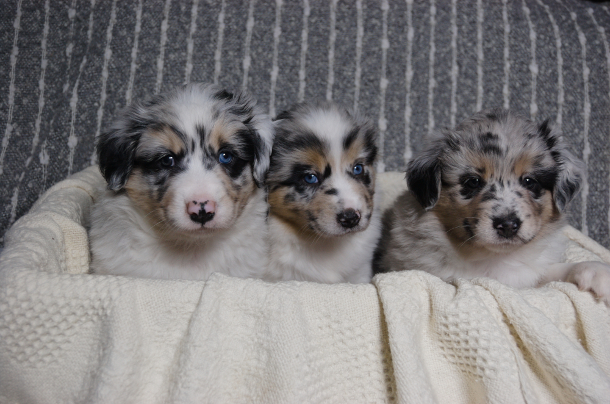
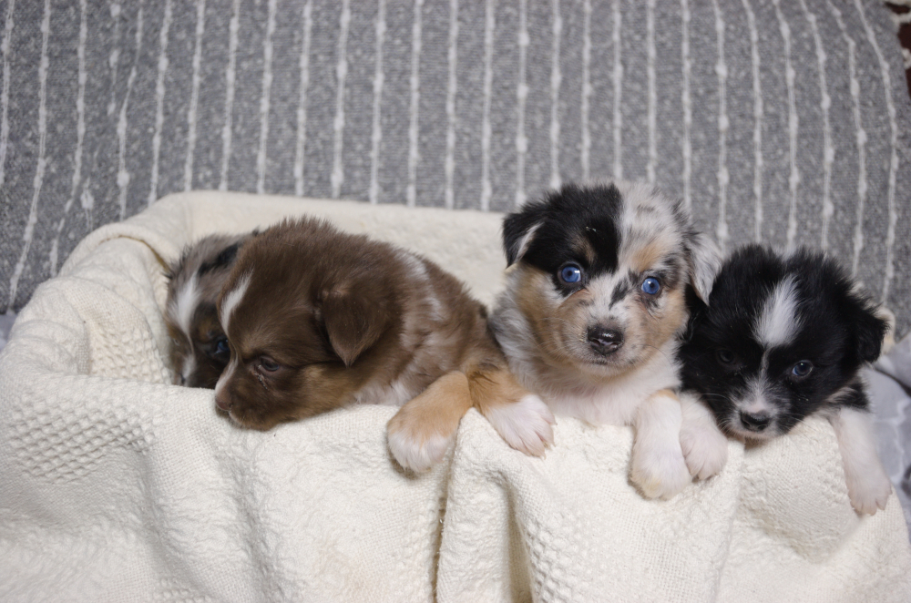
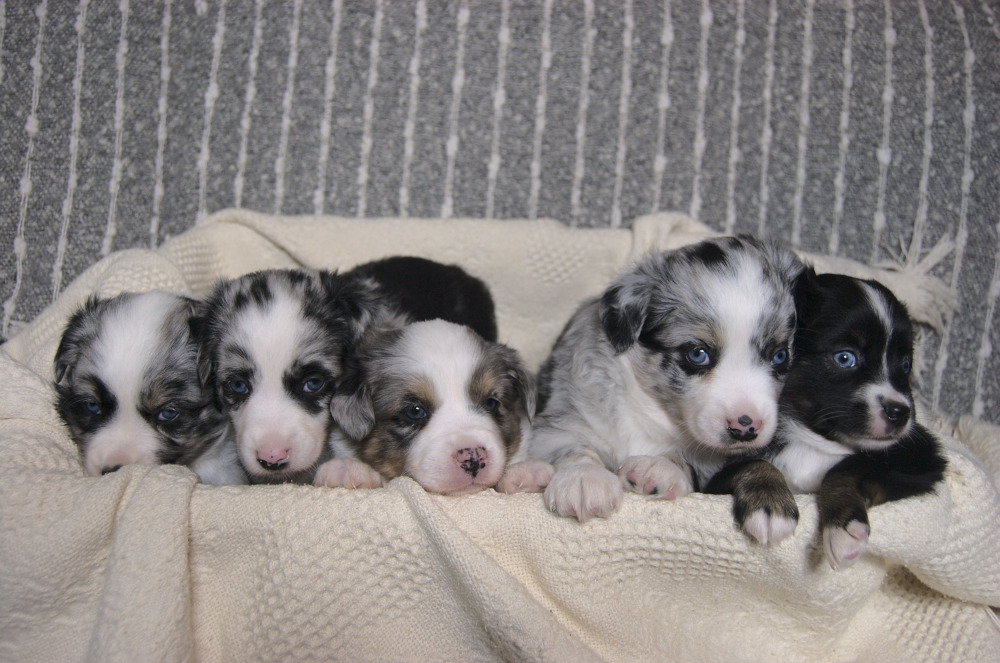
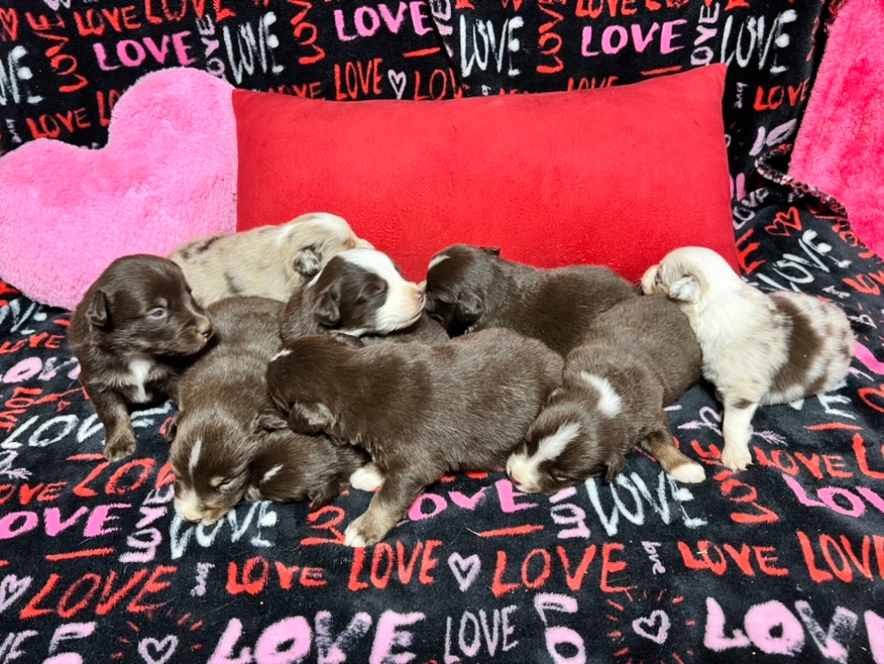

Here at Twisted C&S Mini Aussies, we take pride in our Miniature Australian Shepherd puppies. All of our puppies are ASDR registered, genetic tested, docked, chipped, up to date on their shots/dewormer, and come with pet insurance. Feel free to reach out to us if you have any questions! We are located in Seguin, Make sure that your near by. 
Bo x Maverick
Anchor x Maverick
Hadley x Levi
Skye x Maverick Cinnamon x Levi Malibu x MaverickDon't hesitate to contact us! View our contact page for ways to reach out.